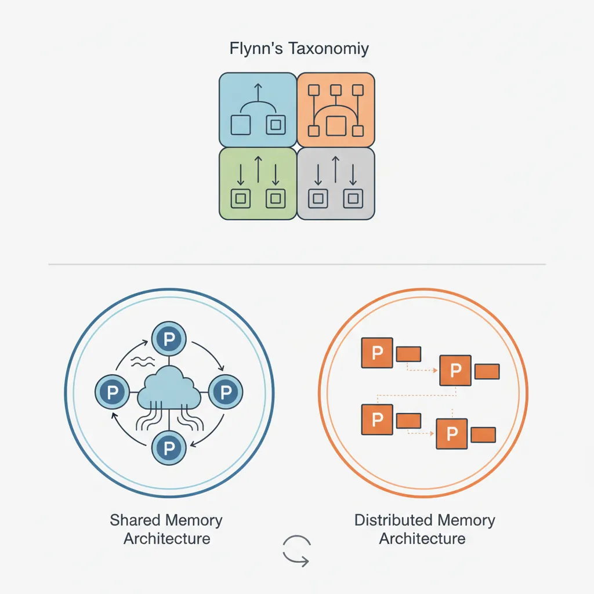
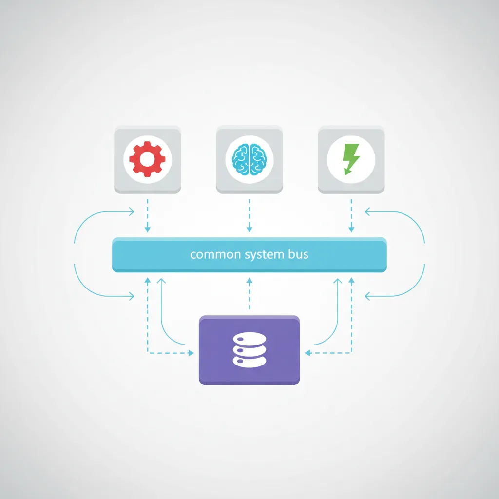
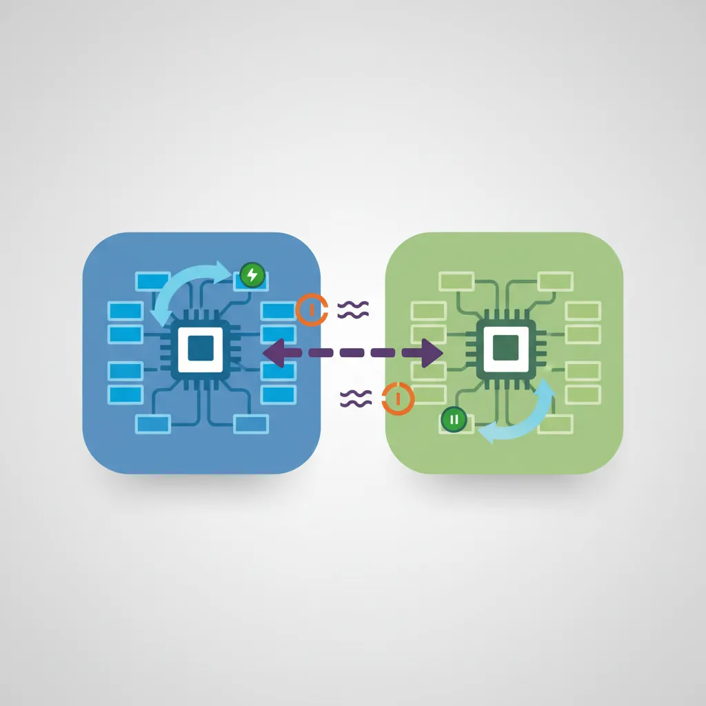
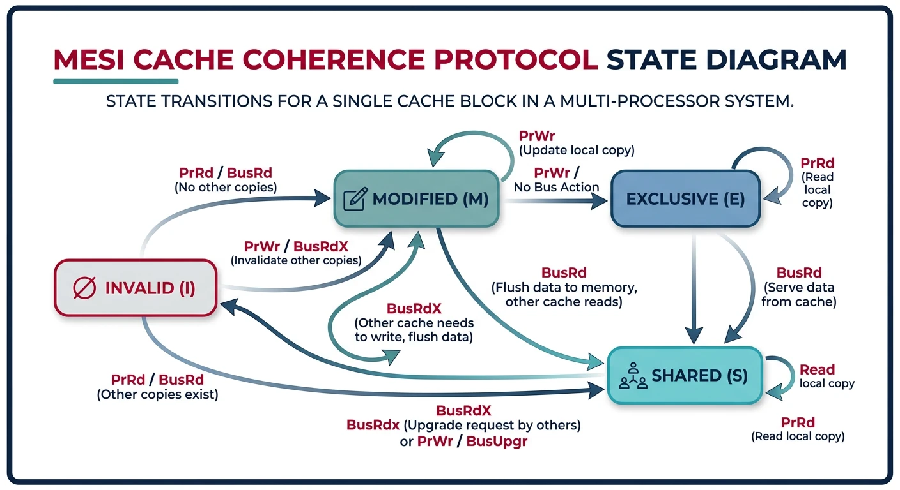
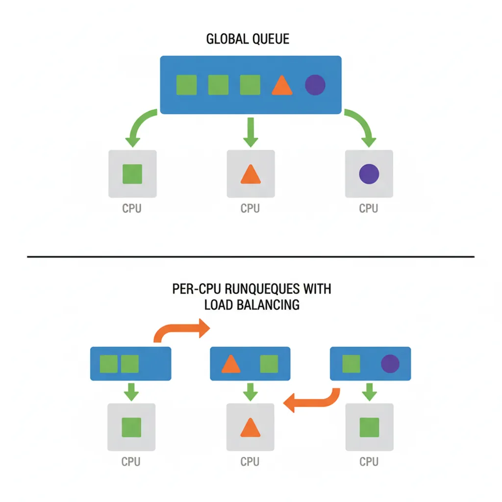

Modern systems feature multiple CPU cores and processors. Operating systems must efficiently schedule work across these resources while maintaining cache coherence and minimizing contention.
Series Context: This is Part 19 of 24 in the Computer Architecture & Operating Systems Mastery series. We explore how operating systems scale to multiple processors.
The Scaling Challenge: Clock speeds hit a wall around 2005. The solution? Multiple cores. But how does an OS efficiently use 8, 64, or even 1000 CPUs?
Types of Multiprocessor Systems
Multiprocessor systems vary dramatically in how CPUs share memory and communicate.

Multiprocessor system classification — Flynn's taxonomy and shared vs distributed memory architectures
Classification
Flynn's Taxonomy:
══════════════════════════════════════════════════════════════
SISD - Single Instruction, Single Data
• Traditional uniprocessor
• One CPU, one data stream
SIMD - Single Instruction, Multiple Data
• GPUs, vector processors
• Same operation on many data elements
• Great for graphics, ML
MIMD - Multiple Instruction, Multiple Data
• General-purpose multiprocessors
• Each CPU runs independent program
• This is what we focus on!
Memory Architecture:
━━━━━━━━━━━━━━━━━━━━━━━━━━━━━━━━━━━━━━━━━━━━━━━━━━━━━━━━━━━━
1. SHARED MEMORY (UMA/NUMA)
• All CPUs access same physical memory
• Communication via shared variables
• Examples: Desktop, server CPUs
2. DISTRIBUTED MEMORY
• Each node has private memory
• Communication via message passing
• Examples: Supercomputers, clusters
Symmetric Multiprocessing (SMP)
SMP (also called UMA - Uniform Memory Access) treats all processors equally with uniform memory access times.

Symmetric multiprocessing (SMP) — all CPUs share equal access to memory through a common bus
SMP Architecture:
══════════════════════════════════════════════════════════════
┌───────┐ ┌───────┐ ┌───────┐ ┌───────┐
│ CPU 0 │ │ CPU 1 │ │ CPU 2 │ │ CPU 3 │
│ L1 │ │ L1 │ │ L1 │ │ L1 │
└───┬───┘ └───┬───┘ └───┬───┘ └───┬───┘
│ │ │ │
└──────────┼──────────┼──────────┘
│
┌──────┴──────┐
│ L3 Cache │ (shared)
└──────┬──────┘
│
┌──────┴──────┐
│ System Bus │
└──────┬──────┘
│
┌──────┴──────┐
│ Memory │
└─────────────┘
• All CPUs equal - any can run any process
• Uniform access time to all memory
• Single OS instance manages all CPUs
• Shared bus becomes bottleneck beyond ~8 CPUs
# View CPU topology on Linux
$ lscpu
Architecture: x86_64
CPU(s): 8
Thread(s) per core: 2
Core(s) per socket: 4
Socket(s): 1
NUMA node(s): 1
# Detailed topology
$ cat /sys/devices/system/cpu/cpu0/topology/core_id
0
NUMA Architecture
NUMA (Non-Uniform Memory Access) scales beyond SMP by giving each CPU group its own local memory.

NUMA architecture — each node has local memory with fast access, remote access incurs 1.5–2x latency penalty
When multiple CPUs cache the same data, we need cache coherence to ensure consistency.

MESI protocol state transitions — cache lines move between Modified, Exclusive, Shared, and Invalid states
The Cache Coherence Problem:
══════════════════════════════════════════════════════════════
1. CPU0 reads X=5 into cache
2. CPU1 reads X=5 into cache
3. CPU0 writes X=10 (updates its cache)
4. CPU1 reads X... sees stale value 5!
CPU0 Cache CPU1 Cache
┌─────────┐ ┌─────────┐
│ X = 10 │ │ X = 5 │ ← Incoherent!
└─────────┘ └─────────┘
│ │
┌────┴───────────────┴────┐
│ Memory: X = 5 │
└───────────────────────────┘
MESI Protocol (common solution):
━━━━━━━━━━━━━━━━━━━━━━━━━━━━━━━━━━━━━━━━━━━━━━━━━━━━━━━━━━━━
Modified: This cache has only valid copy (dirty)
Exclusive: This cache has only valid copy (clean)
Shared: Multiple caches have copy (read-only)
Invalid: Cache line is stale/empty
When CPU0 writes:
1. Invalidate all other caches holding that line
2. Transition to Modified state
3. Other CPUs must fetch from CPU0 or memory
False Sharing: Different variables on the same cache line cause unnecessary coherence traffic. Solution: Pad data structures to cache line boundaries (64 bytes typical).
Multiprocessor Scheduling
Scheduling for multiple CPUs introduces new challenges beyond single-CPU scheduling.

Multiprocessor scheduling — global queue vs per-CPU runqueues with load balancing
Processor affinity keeps threads on the same CPU to maintain cache warmth.
# View process affinity
$ taskset -p $$
pid 1234's current affinity mask: ff # Can run on CPUs 0-7
# Set affinity - run on CPUs 0 and 1 only
$ taskset -c 0,1 ./my_program
# Change running process
$ taskset -p -c 0-3 1234
# In C code:
#include <sched.h>
cpu_set_t cpuset;
CPU_ZERO(&cpuset);
CPU_SET(0, &cpuset); // Run on CPU 0
sched_setaffinity(0, sizeof(cpuset), &cpuset);
Soft vs Hard Affinity: Soft affinity is a preference (scheduler tries to respect). Hard affinity is mandatory (process can ONLY run on specified CPUs). Use hard affinity for latency-critical applications.
Load Balancing
Per-CPU queues need load balancing to prevent idle CPUs while others are overloaded.
Linux Load Balancing:
══════════════════════════════════════════════════════════════
Scheduling Domains (hierarchical):
┌─────────────┐
│ System │ Balance every 64ms
└──────┬──────┘
┌───────┴───────┐
┌─────┴─────┐ ┌─────┴─────┐
│ NUMA 0 │ │ NUMA 1 │ Balance every 16ms
└────┬─────┘ └────┬─────┘
┌───┴───┐ ┌───┴───┐
┌─┴─┐ ┌─┴─┐ ┌─┴─┐ ┌─┴─┐
│C0│ │C1│ │C2│ │C3│ Core level
└──┘ └──┘ └──┘ └──┘ Balance every 4ms
Balancing prefers:
1. Same core (shared L2) - cheapest
2. Same NUMA node - moderate cost
3. Different NUMA node - most expensive
Push vs Pull Migration:
━━━━━━━━━━━━━━━━━━━━━━━━━━━━━━━━━━━━━━━━━━━━━━━━━━━━━━━━━━━━
Push: Busy CPU pushes tasks to idle CPUs (periodic)
Pull: Idle CPU steals tasks from busy CPUs (immediate)
Conclusion & Next Steps
Multiprocessor systems are now the norm. We've covered:
System Types: UMA vs NUMA, shared vs distributed memory
SMP: Symmetric multiprocessing with uniform access
NUMA: Non-uniform access with local/remote memory
Cache Coherence: MESI protocol and false sharing
Scheduling: Global vs per-CPU queues
Affinity: Keeping threads on same CPU
Load Balancing: Work stealing and push migration
Key Insight: Memory locality is everything in multiprocessor systems. Keep data close to the CPU that uses it, and avoid unnecessary data sharing between cores.